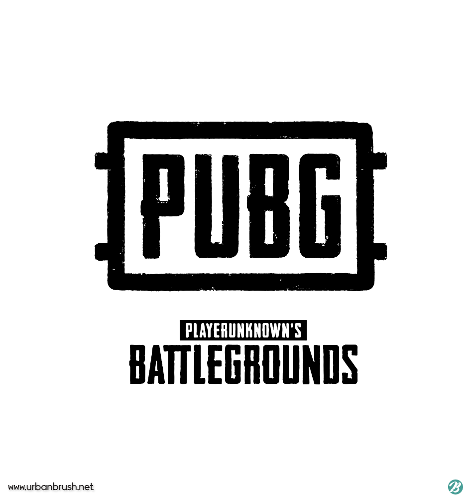
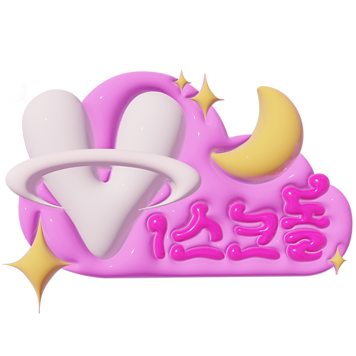

데이터 기반 인사이트로 게임 경험을 풍부하게 만드는 것을 목표로 합니다.
2017 – 2025 서울시립대학교, 수학과
수학적 사고와 통계 분석 능력을 기르며 데이터 분석에 대한 기초를 확립했습니다.
2021 – 2024 수학 강사 in U2M
학생들의 흥미 요소를 분석하고, 수학적 직관성과 산술적 이해 두 방식으로 모두 이해시키는 수업을 진행했습니다.
마르코프 체인 전이행렬을 이용해 목표 단계와 남은 먹이주기 횟수를 분석, 최적의 목표 단계를 계산하는 시스템을 구축했습니다. 이후 Discord 봇으로 배포했습니다.
Tech Stack: Python, NumPy, Discord.py
GitHub
상위권 유저 플레이 데이터를 수집·정제하여 총기별 명중률, 타격 부위, 유효 사격 거리 등을 분석했습니다.
Tech Stack: Python, Pandas, Matplotlib
GitHubLoL API를 이용해 인게임 데이터를 수집하고, 시간대별 위치 정보를 분석해 상위권 유저 특성을 도출했습니다.
Tech Stack: Python, Riot API, Pandas
GitHub
실제 고객 데이터를 활용해 90일/120일 이내의 예상 구매 횟수와 금액등을 예측, 주 고객층의 이용 시간 분석 및 미끼 상품의 효용성을 검증했습니다.
Tech Stack: Python, Pandas, Matplotlib
GitHub